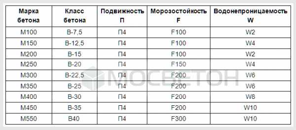

Тяжелые бетоны по степени морозостойкости делят на марки от F50 до F700. Чем выше морозостойкость, тем большее кол-во циклов замораживания оттаивания может выдержать бетон без снижения марки по прочности, количество этих циклов и означает цифра после "F". Морозостойкость бетона для жилых и промышленных зданий обычно характеризуется маркой F50.
| Марка | Класс | Морозостойкость | Водонепроцинаемость |
| M100 | B-7,5 | F100 | W2 |
| M150 | B-12,5 | F100 | W4 |
| M200 | B-15 | F100 | W2 |
| M250 | B-20 | F150 | W4 |
| M300 | B-22,5 | F200 | W6 |
| M350 | B-25 | F200 | W6 |
| Марка | Класс | Морозостойкость | Водонепроцинаемость |
